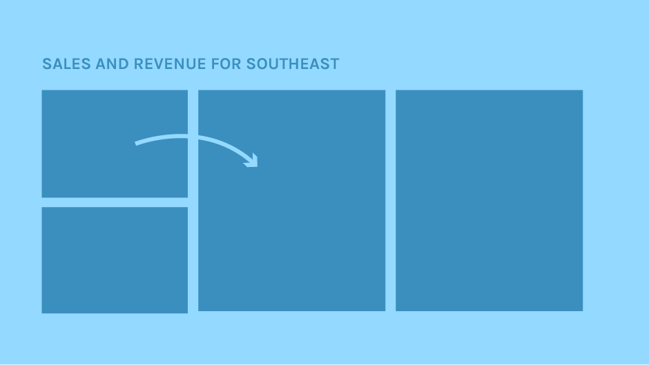
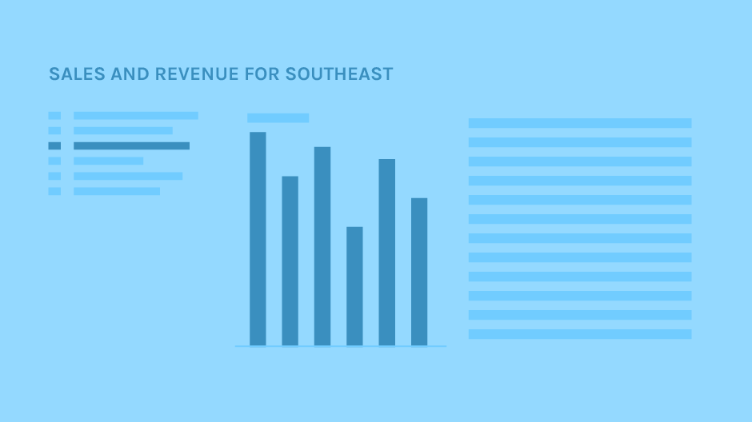

Draft Your Report
Collect Your Ideas
If you’ve documented your report’s primary objective, use that description to begin your first draft. If not, write a one-sentence statement answering the following question:
What is the story of your report?
Next, draft an outline or a table of contents. Your outline will serve as a guideline as you draft your report.
Finally, compose a one-sentence statement for all of the main pages of the report. What message do you want to convey on each page? While considering the content per page, remember to group similar items together.
Always keep your audience and your story in mind.
Sketch on Paper
Start by sketching the main point of your story. Creating a paper sketch enables you to visualize your story without being distracted by the software. Your main point may need two or three pages to convey.

Copy your one-sentence statement at the top of your sketch paper. Consider which data items you want to use to illustrate your point, and then draw placeholder boxes for the visuals in your report.
For each page, draw a rough layout that shows where every box will go. Be sure to include interactions in your sketches. If you want one object to filter another, draw an arrow between them.
Fill in the Visualizations
Once you’ve determined the boxes you need on your page, make a guess at the kind of chart or table you want to use for each of those placeholder boxes.
Try different layouts to see which visual flow best communicates your message.
After you sketch the pages for your main point, sketch the supporting pages, the concluding page, and then go back and review. If an introductory page is needed, sketch it now.
Build Your First Draft
Create the report on the computer. If you don’t like the layout you sketched, change things around as you create, but don’t make too many changes. Your goal in this step is to get the content in the application, not to make it perfect.
Do not spend a lot of time on the details. Focus on the big picture. Knowing the work is not final helps free your mind, allowing you to be more creative. Once the first draft is complete, take a break from the report and come back to it later.
Revise Your Draft
Check the flow of the report and make changes to ensure that your story makes sense. Consider whether the data visualizations you’ve selected are the best fit for your data. Review your interactions, revising them if they aren’t completely clear. Don’t forget to review the text in your report. Check for spelling mistakes and typos.
Request Feedback
Ask others to review your report before publishing it. Have someone read it and try to answer some basic questions, such as:
- What’s the main point of the report?
- What is the data story?
If you cannot get feedback from your actual audience, find people who match the description of your target audience.
Iterate
Assess the comments from your audience and colleagues. If possible, schedule a meeting with the reviewers, the team responsible for the report, and any supervisors. Discuss which changes should be made, and make them. Repeat gathering feedback and iterating as necessary.